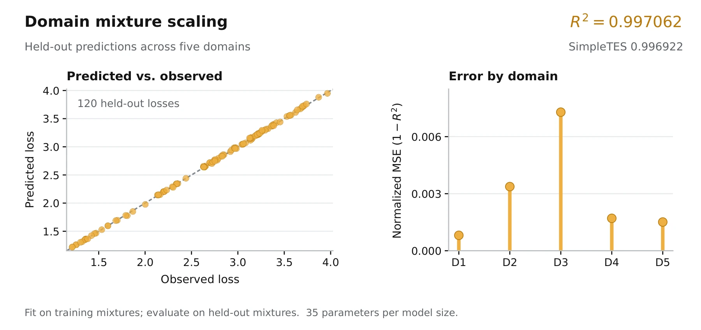

- Previous best
- 0.996922
- EvoDuet
- 0.997062
- Objective
- Held-out R² ↑
- Run cost
- $15.84


Source
Python
# EVOLVE-BLOCK-START
"""
Scaling law discovery for LLM finetuning scenarios
Initial program with a simple linear form that can be evolved
"""
import numpy as np
def scaling_law_func(data_points, params):
"""Predict each domain loss with a bounded additive exponential mixture law."""
X = np.atleast_2d(np.asarray(data_points, dtype=float))
p = np.asarray(params, dtype=float)
if p.ndim == 1:
if p.size != 35:
raise ValueError("Expected 35 parameters.")
p = p.reshape(5, 7)
if p.shape != (5, 7) or X.ndim != 2 or X.shape[1] != 5:
raise ValueError("Expected parameters (5,7) and data_points (N,5).")
contrasts = np.array([
[1., 1., 1., 1.], [-1., 1., 1., 1.],
[0., -2., 1., 1.], [0., 0., -3., 1.],
[0., 0., 0., -4.]
]) / np.sqrt(np.array([2., 6., 12., 20.]))
h = (X - .2) @ contrasts
z = -np.log(np.clip(X, 1e-8, 1.)) - np.log(5.)
out = np.empty((X.shape[0], 5))
for j in range(5):
# The clipped exponent guarantees finite extrapolation at boundaries.
e = np.clip(p[j, 1] + h @ p[j, 2:6], -30., 30.)
out[:, j] = p[j, 0] + np.exp(e) + p[j, 6] * z[:, j]
return out
def fit_scaling_law(data_points, loss_values):
"""Fit bounded exponential mixture laws using analytic Jacobians and multistart least squares."""
from scipy.optimize import least_squares
X = np.atleast_2d(np.asarray(data_points, dtype=float))
y = np.asarray(loss_values, dtype=float)
if y.ndim == 1:
y = y[:, None]
if X.ndim != 2 or X.shape[1] != 5 or y.shape != (X.shape[0], 5):
raise ValueError("Expected X (N,5) and losses (N,5).")
contrasts = np.array([
[1., 1., 1., 1.], [-1., 1., 1., 1.],
[0., -2., 1., 1.], [0., 0., -3., 1.],
[0., 0., 0., -4.]
]) / np.sqrt(np.array([2., 6., 12., 20.]))
h = (X - .2) @ contrasts
z = -np.log(np.clip(X, 1e-8, 1.)) - np.log(5.)
lo = np.array([-5., -8., -15., -15., -15., -15., -4.])
hi = np.array([5., 4., 15., 15., 15., 15., 4.])
rng = np.random.default_rng(1729)
ans = np.zeros((5, 7))
for j in range(5):
def residual(v):
e = np.clip(v[1] + h @ v[2:6], -30., 30.)
return v[0] + np.exp(e) + v[6] * z[:, j] - y[:, j]
def jacobian(v):
e = np.clip(v[1] + h @ v[2:6], -30., 30.)
q = np.exp(e)
J = np.empty((X.shape[0], 7))
J[:, 0] = 1.
J[:, 1] = q
J[:, 2:6] = q[:, None] * h
J[:, 6] = z[:, j]
return J
scale = max(np.ptp(y[:, j]), .2)
base = np.array([
np.min(y[:, j]) - .5,
np.log(scale), 0., 0., 0., 0., 0.
])
starts = [np.clip(base, lo, hi)]
# Deterministic perturbations improve basin coverage without
# materially increasing runtime for this small fitting problem.
for _ in range(3):
v = base.copy()
v[1:6] += rng.normal(0., 1.25, 5)
v[6] += rng.normal(0., .35)
starts.append(np.clip(v, lo, hi))
best = None
best_cost = np.inf
for v0 in starts:
fit = least_squares(
residual, v0, jac=jacobian, bounds=(lo, hi),
loss="linear", x_scale="jac", max_nfev=900,
xtol=1e-11, ftol=1e-11, gtol=1e-11
)
cost = 2. * fit.cost
if np.isfinite(cost) and cost < best_cost:
best_cost = cost
best = fit.x
ans[j] = best if best is not None else np.clip(base, lo, hi)
return ans
# EVOLVE-BLOCK-END
Requires the original benchmark harness and dependencies.
Score history 100 iterations
Score history
Best-so-far search-time score ↑
Search-time scores; the final native objective is reported above.
Run details
A fitted scaling-law program that predicts held-out loss across training-domain mixtures.
The figure shows predictions on the frozen held-out data from the paper’s replay.
Recorded score: 0.9970620845239324 · reference: 0.9969219209967796 · seed: 43.
Program ID: 3425689e-66d0-4168-87a5-8544bb7bf7f5
Source SHA-256: 6b2f917e8dfee7016ba04d4cd9f6b98d20bb6006950eeb5873ce6b1f56e2f48a
History SHA-256: 6e8eff996557a5c2f64a89916b45c1921eae10c1c907ec34f64ca47c1c987b89